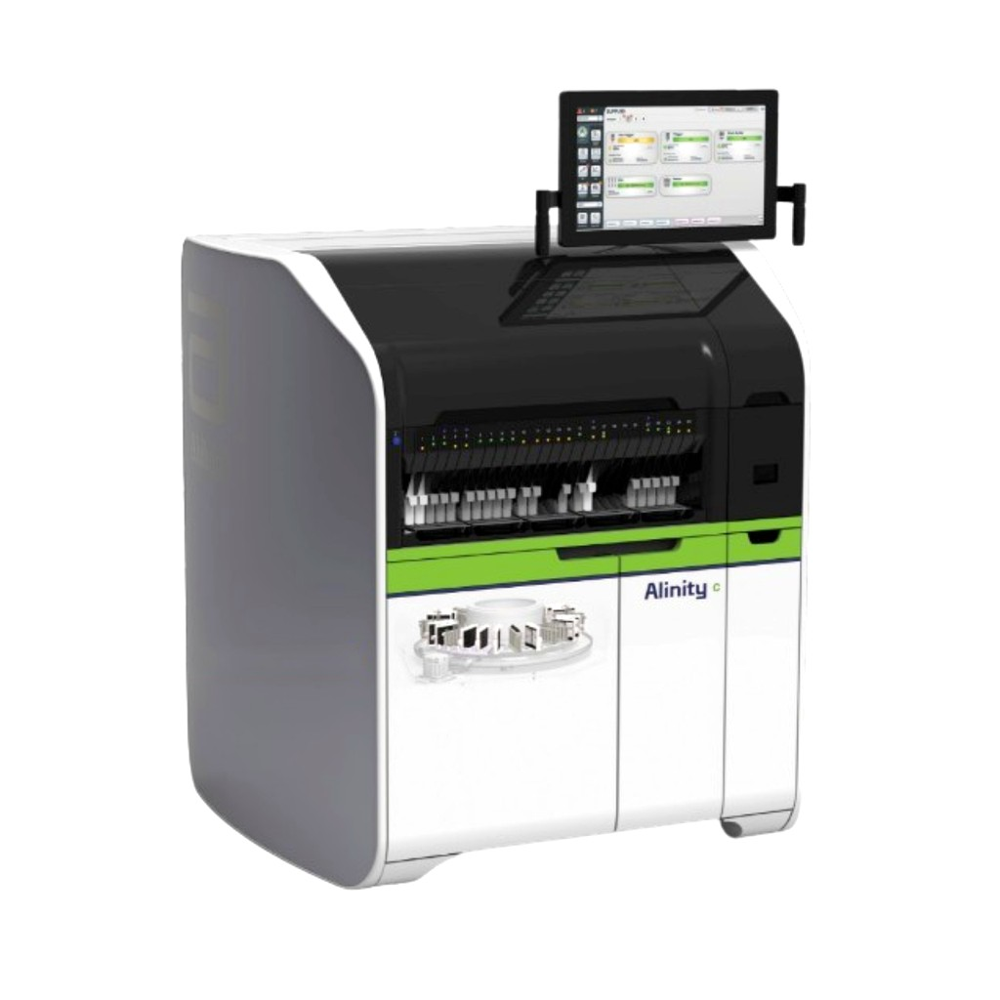

🇭🇺 EU vs 🇺🇸 США • Данные НПО • 120 vs 200 (Alinity I)
KLEEYA vs Abbott Alinity i / ARCHITECT
По таблице НПО: Alinity I — 200 т/ч, 47 реагентов, 150 проб, 30 мин; ARCHITECT i1000SR — 100 т/ч, 25 реаг., 65 проб, 29 мин; i2000SR — 200 т/ч, 25 реаг., 135 проб. KleeYa — 120 т/ч, 500 кювет, 16 реаг., 72 пробы, открытая.

KLEEYA
120 т/ч • 500 кювет • 16 реаг. • 72 пробы • Открытая
VS

Abbott Alinity i / ARCHITECT
Alinity I: 200 т/ч • 47 реаг. • 150 проб • ARCHITECT i1000: 100 т/ч
| Параметр | KLEEYA (НПО) | Alinity I (НПО) | ARCHITECT i1000SR (НПО) | Вывод |
|---|---|---|---|---|
| Кюветы | 500 | — | — | KLEEYA 500 |
| Тестов / час | 120 | 200 | 100 | Alinity +67% |
| Реагентов | 16 | 47 | 25 | Alinity 2.9× |
| Образцов | 72 | 150 | 65 | Alinity 2× |
| Время 1-го | 25 мин | 30 мин | 29 мин | KLEEYA быстрее на 5 мин |
| Тип | Открытая | Закрытая | Закрытая | KLEEYA свобода |
Когда KLEEYA лучше Alinity
- Поток 50–300 проб/день — Alinity недозагружен
- Нужны уникальные MxA/Alzheimer/Borrelia — Abbott нет
- Нужно 500 кювет walk-away vs — у Abbott
- Быстрее 1-й результат (25 vs 30)
- Низкий CAPEX остров vs линия
Сильные стороны Abbott
- Alinity I: 47 реагентов, 150 проб — мегалаба
- Alinity c: 1350 тестов/час (химия)
- ARCHITECT — огромная база 100–200 т/ч
Минусы vs KLEEYA
- Дорогой закрытый тест, высокий CAPEX
- Нет 500 кювет, нет открытой R&D
Вердикт
Мегалаба 500+ проб — Alinity I (47 реаг., 150 проб). Средний класс 100–300 проб — KLEEYA: 500 кювет, открытая, быстрее на 5 мин, дешевле владеет.